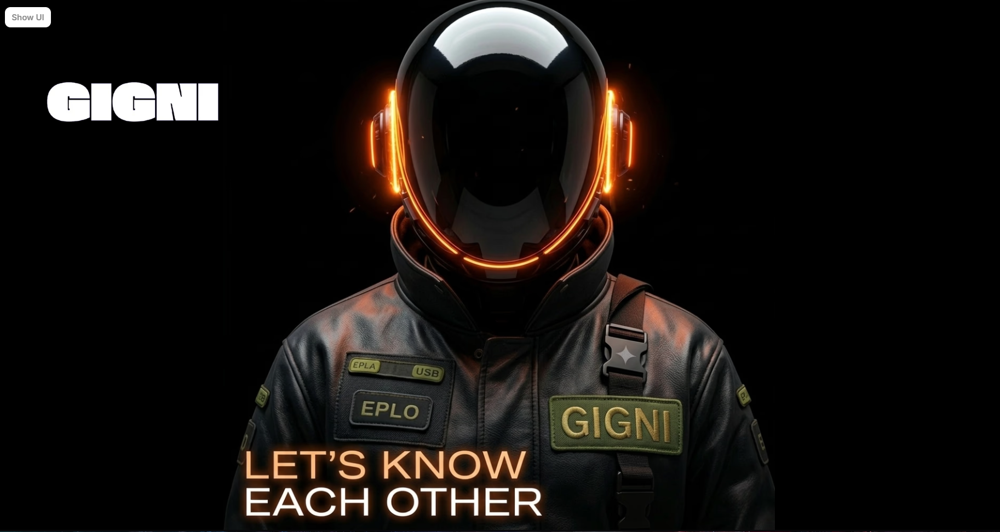

Gigni is a platform designed to help students and explorers discover opportunities that support their learning and career growth. It acts as a central portal for internships, mentorships, hackathons, and community events.
When a student connects with Gigni, they become part of a network that regularly shares real-world, project-based opportunities. Students receive email updates about internships, hackathons, mentorship programs, and events that can help them gain practical experience and build skills beyond the classroom.
The platform focuses on connecting students with hands-on projects and industry-relevant experiences. Instead of only theoretical learning, students get chances to work on real problems, collaborate with mentors, and participate in competitions or community initiatives.
Key aspects of Gigni include:
Overall, Gigni aims to be a trusted ecosystem where students can continuously discover opportunities, learn from mentors, and gain real-world experience, helping them prepare for their future careers.
Gigni connects with students primarily through email, ensuring they never miss important opportunities that can help build their future. Email is used because it is one of the most reliable and convenient ways to communicate with students.
Once a student connects with Gigni, they begin receiving regular updates directly in their inbox about opportunities such as: Real-world project-based internships, Hackathons and innovation challenges, Mentorship programs, Workshops, events, and community activities.
By sending these updates through email, Gigni makes sure that students stay informed without needing to constantly search for opportunities themselves. Important information reaches them directly, allowing them to easily explore and apply for programs that match their interests and career goals.
This approach helps students stay organized, save time, and remain connected to valuable opportunities that contribute to their learning and professional growth. Through consistent email communication, Gigni builds a trusted bridge between students and future-building experiences.